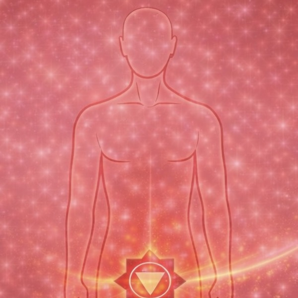
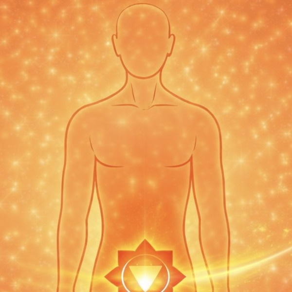
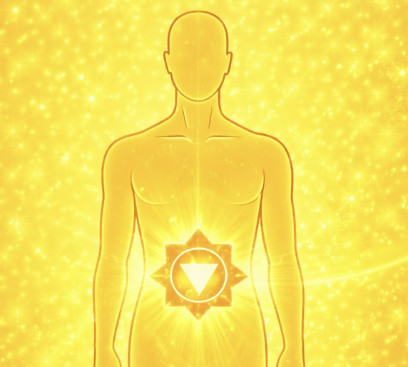
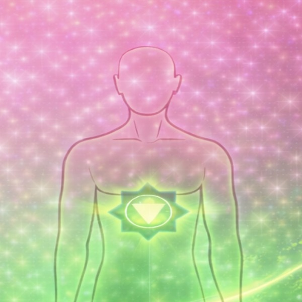

ROSES OS · A Consciousness & Remembrance Ecosystem

ROSES OS · Teacher Visual Aid Manual
Rose Meditation — All Levels
Teachings by Angelina Ataíde
ROSES OS
ROSES OS
2026 · REVIEW EDITION
Rose Meditation — All Levels
Rose Meditation — All Levels
| Opening Sections | 3 | |
| Level 1 — Foundational Practices | 4 | |
| Level 2 — Space Preparation & Chakra Activation | 13 | |
| Level 3 — Advanced Practice | 23 |
This visual aid manual is designed for teachers and facilitators. It contains all slide references across Levels 1, 2, and 3 of the Rose Meditation practice.
Before beginning, all participants honor these agreements:
Punctuality, Confidentiality, Co-responsibility, Trust, Patience, Empathy and Compassion.
Aura Reading emerged in the 1960s, in California, channeled by Lewis S. Bostwick. Founder of the Berkeley Psychic Institute and the Church of the Divine Man, he channeled and systematized the techniques and tools sent by the angels, to assist in the process of evolution of humanity.
Lineage: Berkeley Psychic Institute → Anastasia Plunk → Angelina Ataide → Escola da Aura → ROSES OS

Slides 1–18


This concludes the Level 1 visual aids. All foundational tools — grounding cord, golden sun, aura, circuits, roses, and sacred space — are now referenced.
The Earth circuit is an energetic pathway that draws the energy of the Earth upward through the feet, rising through the legs and into the body. This circuit connects you to the grounding, nourishing, stabilizing force of the planet.
The Cosmic circuit draws cosmic energy downward through the crown of the head (7th chakra) and into the body. This connects you to the higher frequencies of universal consciousness, inspiration, and spiritual guidance.
When both circuits are activated simultaneously, the energies of the Earth and Cosmos flow together through the body, creating a unified field of balanced, integrated energy.
The Pink Rose Closure is offered at the end of the meditation as a gift of well-being. Visualize “Happy, Healthy, Whole, Body, Mind & Soul.”
Level 2 begins with creating your own sacred space — an internal energetic environment that serves as your meditation home. This is the space from which all deeper work is conducted.
Understanding the locations and roles of the upper chakras: 6th Chakra (Third Eye) at the center of the forehead; 7th Chakra (Crown) at the top of the head.
The Sacred Space is the culmination of Level 1 — where all foundational techniques come together in unified awareness.
Slides 19–38



Element: Earth · Statement: I AM
Focus: Stability — Safety — Embodiment

Element: Water · Statement: I FEEL
Focus: Emotions — Creativity — Pleasure

Element: Fire · Statement: I CAN
Focus: Personal Power — Self-Esteem — Drive

Element: Air · Statement: I LOVE
Focus: Love — Compassion — Connection

Element: Ether/Sound · Statement: I SPEAK AND I LISTEN
Focus: Communication — Truth — Authenticity

Element: Light · Statement: I SEE
Focus: Imagination — Perception — Visualization

Element: Thought · Statement: I KNOW
Focus: Spiritual Connection — Inner Wisdom


Space preparation, protection, cleansing, chakra system overview, individual chakra activations, aura layer cleansing, chakra cleansing, energy recovery, and the four phases of Golden Sticky Roses.
Before meditation, prepare your physical environment to support the energetic work. The external space should mirror the internal intention: clean, clear, quiet, and intentionally held.
The physical meditation space is protected by creating an energetic grid using roses. Golden roses are placed at the four corners, connected by lines of golden energy forming a sacred geometric structure.
With protection established, the cleansing follows. A Golden Rose is set above the grid and passed downward through its entire structure, removing any foreign, stagnant, or disruptive energies inside the room. This Rose comes down to be transmuted in the center of the earth through the Grounding Cord of the room.
After protection and cleansing, you claim ownership of the space. This is an act of energetic sovereignty — declaring the space as yours, filling it with your own energy and intention.
Slides 39–44

The Analyzer is an energetic point located at the back of the head, at the base of the skull. It is used for deeper perception, reading, and discernment of energy.

A relationship can only manifest in the material world if sustained by a spiritual agreement. Such agreements may be dissolved by either party through conscious will.

We engage in energetic interactions with others constantly. When energetic cords are formed, our auras connect through these ties. It is important to know how to consciously cut them.

After sexual intercourse, if you want to recover energy you may have left with the other person and return energy they may have left with you, follow the recovery steps.

A technique for manifesting situations on the physical plane. Must be practiced for seven consecutive days, focused on one goal at a time.
The Analyzer, sacred space integration, spiritual agreements, cord cutting, post-intimacy recovery, and manifestation through Mock Up.
The Rose is a technology of remembrance —
a living practice that reconnects you
with the intelligence already present
within your body, your breath,
and your being.